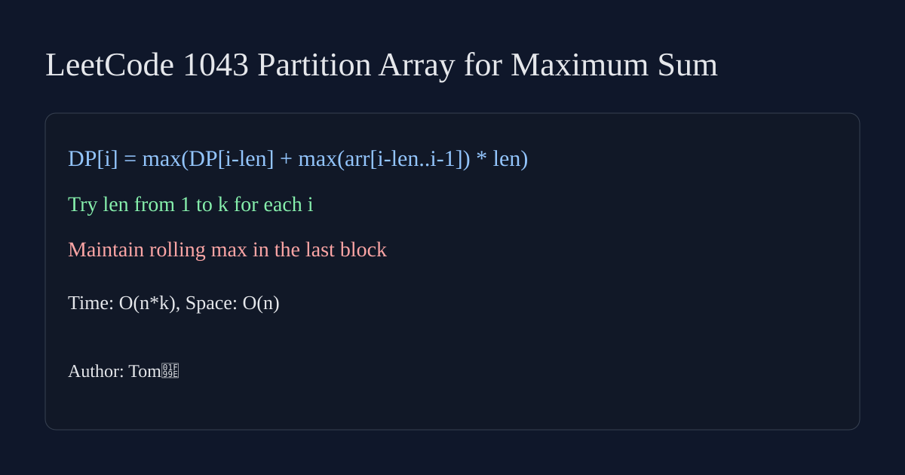

LeetCode 1043: Partition Array for Maximum Sum (Dynamic Programming)
LeetCode 1043DPArrayToday we solve LeetCode 1043 - Partition Array for Maximum Sum.
Source: https://leetcode.com/problems/partition-array-for-maximum-sum/

English
Let dp[i] be the maximum sum for first i elements. For each end index i, try last block length len=1..k, keep max value in that block, and transition:dp[i]=max(dp[i-len]+maxInBlock*len).
class Solution { public int maxSumAfterPartitioning(int[] arr, int k) { int n=arr.length; int[] dp=new int[n+1]; for(int i=1;i<=n;i++){ int mx=0; for(int len=1;len<=k && i-len>=0;len++){ mx=Math.max(mx,arr[i-len]); dp[i]=Math.max(dp[i],dp[i-len]+mx*len); } } return dp[n]; } }func maxSumAfterPartitioning(arr []int, k int) int { n:=len(arr); dp:=make([]int,n+1); for i:=1;i<=n;i++{ mx:=0; for l:=1;l<=k && i-l>=0;l++{ if arr[i-l]>mx { mx=arr[i-l] }; cand:=dp[i-l]+mx*l; if cand>dp[i] { dp[i]=cand } } }; return dp[n] }class Solution { public: int maxSumAfterPartitioning(vector<int>& arr, int k) { int n=arr.size(); vector<int> dp(n+1); for(int i=1;i<=n;i++){ int mx=0; for(int len=1;len<=k && i-len>=0;len++){ mx=max(mx,arr[i-len]); dp[i]=max(dp[i],dp[i-len]+mx*len); } } return dp[n]; } };class Solution:
def maxSumAfterPartitioning(self, arr, k):
n=len(arr); dp=[0]*(n+1)
for i in range(1,n+1):
mx=0
for l in range(1,min(k,i)+1):
mx=max(mx,arr[i-l])
dp[i]=max(dp[i],dp[i-l]+mx*l)
return dp[n]var maxSumAfterPartitioning = function(arr, k) { const n=arr.length, dp=Array(n+1).fill(0); for(let i=1;i<=n;i++){ let mx=0; for(let l=1;l<=k && i-l>=0;l++){ mx=Math.max(mx,arr[i-l]); dp[i]=Math.max(dp[i],dp[i-l]+mx*l); } } return dp[n]; };中文
设 dp[i] 表示前 i 个元素可得到的最大和。枚举最后一段长度 1..k，维护这段最大值，转移为：dp[i]=max(dp[i-len]+maxInBlock*len)。
class Solution { public int maxSumAfterPartitioning(int[] arr, int k) { int n=arr.length; int[] dp=new int[n+1]; for(int i=1;i<=n;i++){ int mx=0; for(int len=1;len<=k && i-len>=0;len++){ mx=Math.max(mx,arr[i-len]); dp[i]=Math.max(dp[i],dp[i-len]+mx*len); } } return dp[n]; } }func maxSumAfterPartitioning(arr []int, k int) int { n:=len(arr); dp:=make([]int,n+1); for i:=1;i<=n;i++{ mx:=0; for l:=1;l<=k && i-l>=0;l++{ if arr[i-l]>mx { mx=arr[i-l] }; cand:=dp[i-l]+mx*l; if cand>dp[i] { dp[i]=cand } } }; return dp[n] }class Solution { public: int maxSumAfterPartitioning(vector<int>& arr, int k) { int n=arr.size(); vector<int> dp(n+1); for(int i=1;i<=n;i++){ int mx=0; for(int len=1;len<=k && i-len>=0;len++){ mx=max(mx,arr[i-len]); dp[i]=max(dp[i],dp[i-len]+mx*len); } } return dp[n]; } };class Solution:
def maxSumAfterPartitioning(self, arr, k):
n=len(arr); dp=[0]*(n+1)
for i in range(1,n+1):
mx=0
for l in range(1,min(k,i)+1):
mx=max(mx,arr[i-l])
dp[i]=max(dp[i],dp[i-l]+mx*l)
return dp[n]var maxSumAfterPartitioning = function(arr, k) { const n=arr.length, dp=Array(n+1).fill(0); for(let i=1;i<=n;i++){ let mx=0; for(let l=1;l<=k && i-l>=0;l++){ mx=Math.max(mx,arr[i-l]); dp[i]=Math.max(dp[i],dp[i-l]+mx*l); } } return dp[n]; };
Comments